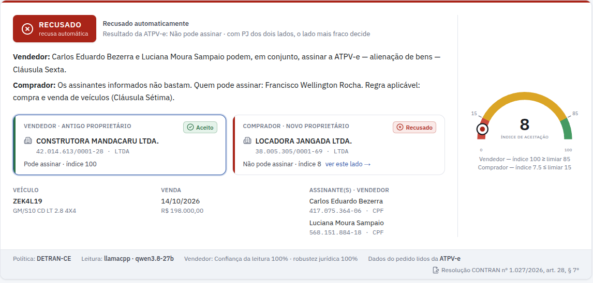
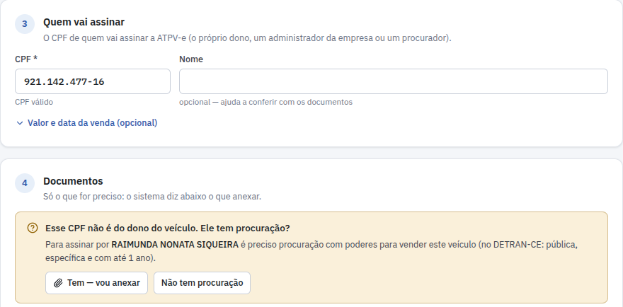
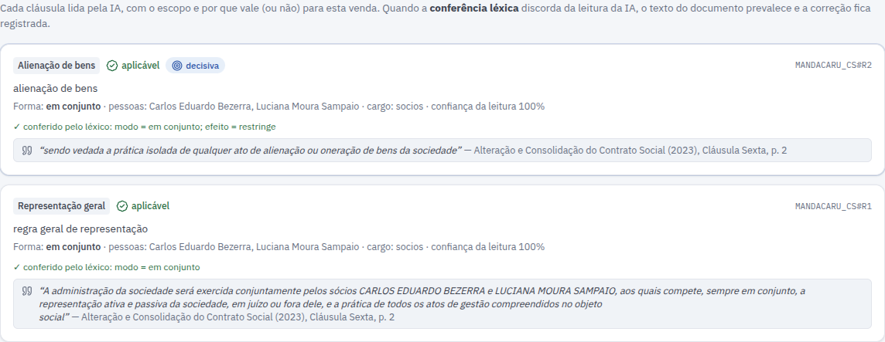
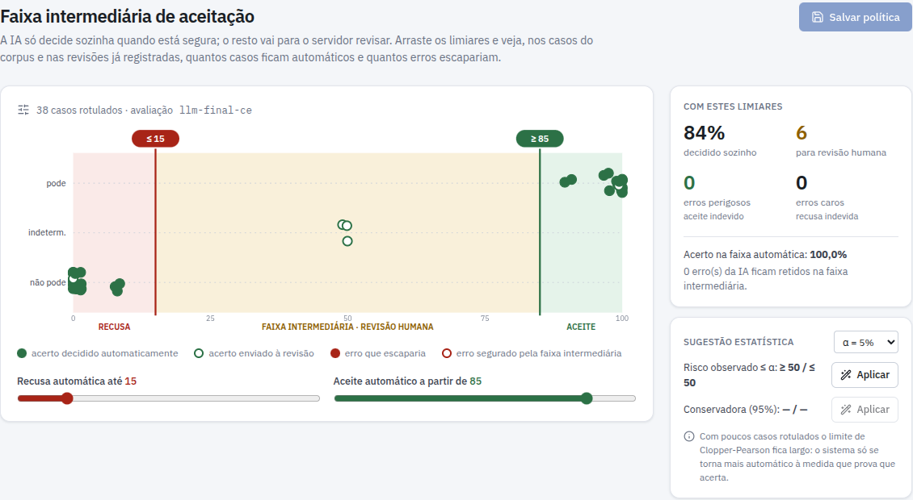
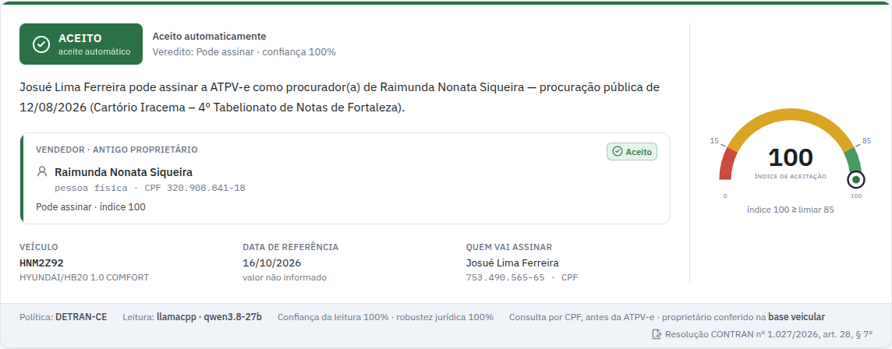
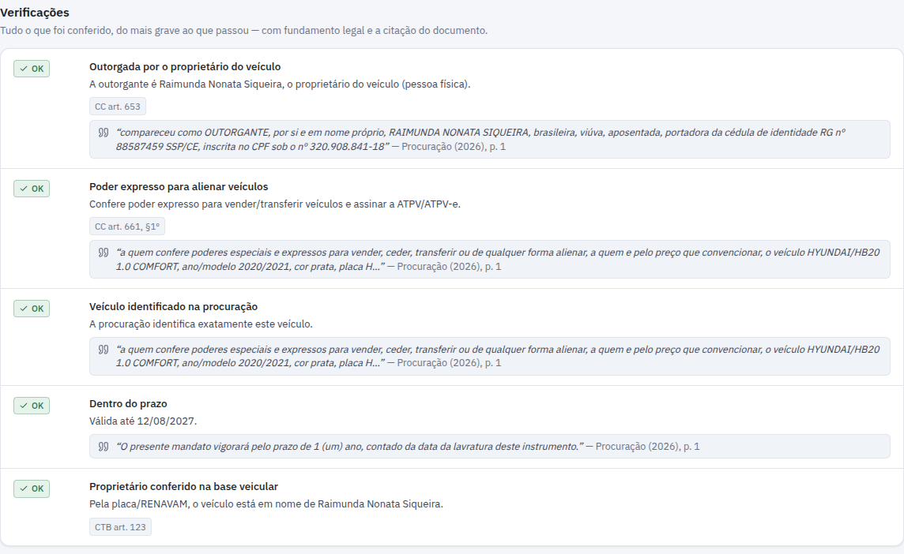
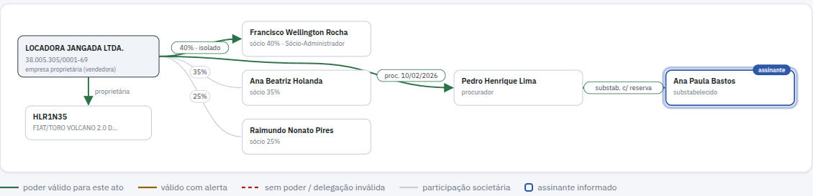
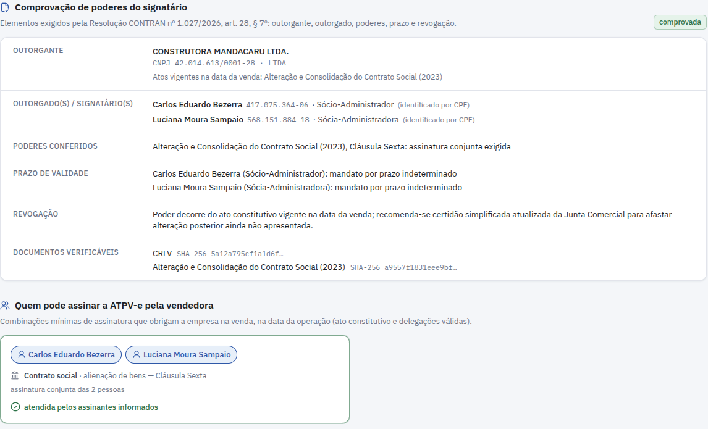
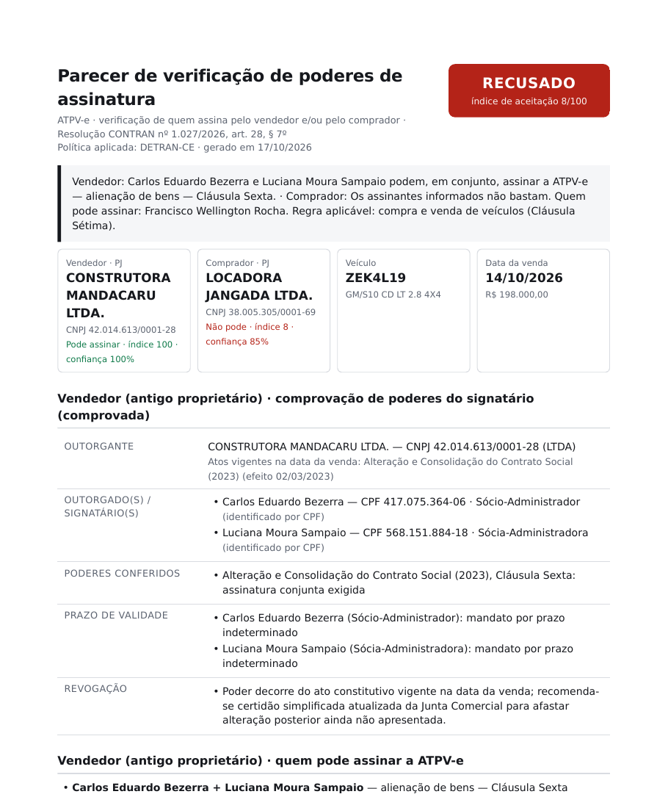
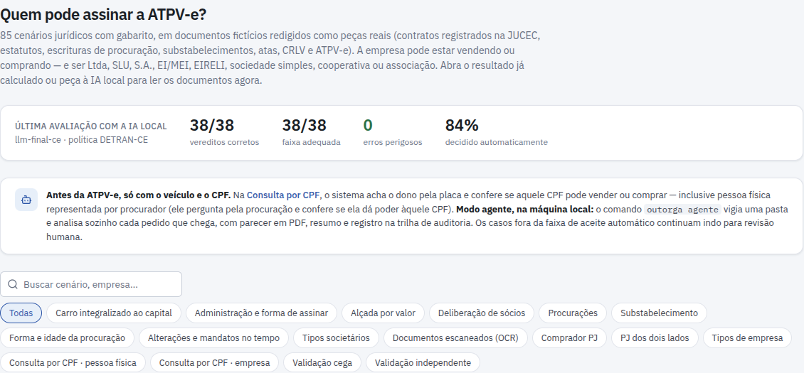

Lê o contrato social, as alterações, as atas e as procurações, e responde se quem vai assinar a
transferência do veículo tem poder para isso — com o trecho de cada documento que comprova.

Resultado de uma análise com a ATPV-e: empresa vendendo e empresa comprando. O vendedor pode assinar;
o comprador assinou com quem não tinha poder.
Protótipo · Núcleo de Informática do DETRAN-CE
Daniel Freitas · outubro de 2026 Todos os dados das telas são fictícios.
demonstração outorga.cepify.com.br
código e documentação github.com/DanielFreitasDev/outorga
Resumo
O Outorga em uma página
Um agente que verifica, sozinho, se a pessoa que vai assinar a ATPV-e tem poder para vender ou comprar o
veículo em nome de uma empresa — ou de outra pessoa, por procuração.
?
O problema
Desde a Resolução CONTRAN nº 1.027/2026 (art. 28, § 7º), quando o antigo ou o novo proprietário é
empresa, a assinatura da ATPV-e só vale com a comprovação dos poderes de quem assina. Hoje isso exige ler à mão
contrato social, alterações, atas e procurações.
✓
O que ele faz
Lê esses documentos, descobre quem pode assinar na data da venda e diz se o CPF informado tem poder. Cada
conclusão vem com o trecho do documento e o artigo de lei que a sustentam.
⚖
Como decide
A IA só lê e cita. Quem decide é um motor de regras jurídicas (Código Civil, Lei das S.A. e política do
DETRAN-CE). Na dúvida, o caso vai para revisão humana em vez de ser aprovado.
▶
Como se usa
Antes da ATPV-e: placa + CPF + "vai vender ou comprar". Com a ATPV-e: o arquivo da ATPV-e e os
documentos. Pela tela web, pela API ou como agente que vigia uma pasta, na própria máquina.
Em números
85
cenários de teste com gabarito, incluindo os exemplos do pedido original
0
aceites indevidos com as IAs recomendadas (3 rodadas dos 85 casos)
~14 s
por caso com o Claude Sonnet 5.5; 1 a 2 min com a IA local
US$ 0,03
por caso (Sonnet 5.5) ou US$ 0,0025 (Haiku 5.5); grátis com IA local
A resposta sai em três faixas
recusa · 0–15
revisão humana · faixa intermediária
aceite · 85–100
O sistema calcula um índice de 0 a 100. Só os casos claros são decididos sozinhos; os limiares são
escolhidos pelo órgão, numa tela própria.
O ganho prático
Para o servidor
Em vez de ler dezenas de páginas, confere um parecer que aponta os trechos que
importam.
Para o DETRAN
Decisões padronizadas, com fundamento legal e trilha de auditoria de cada
análise.
Para quem vende ou compra
Sabe antes da ATPV-e se o CPF pode assinar, ou qual documento
falta.
Para que serve
Por que agora e o que ele resolve
O contexto
Res. CONTRAN 1.027/2026, art. 28, § 7º: a prova de poderes precisa identificar outorgante, outorgado,
poderes, prazo e revogação. Prazo de adequação: por volta de 16/11/2026.
Provimento CNJ 252/2026: a plataforma federal de venda digital não aceita empresas, pela falta de
verificação automática dos poderes societários.
Firma reconhecida prova quem assinou, não os poderes.
DETRAN-CE: procurador só com procuração pública e específica, de até 1 ano.
Duas formas de perguntar
1 · Consulta por CPF (antes da ATPV-e)
Placa, CPF e "vender ou comprar". O dono vem da base veicular. Se for empresa, confere o CPF nos atos e
procurações; se for pessoa física e o CPF for de outra pessoa, pede a procuração e confere.
2 · Análise com a ATPV-e
Lê da ATPV-e o veículo, o vendedor, o comprador, o valor e as assinaturas, e verifica os dois lados. Com
empresa dos dois lados, vale o lado mais fraco.

Consulta por CPF. A placa trouxe a dona do veículo pela base veicular, e o CPF informado é de outra pessoa:
o sistema pede a procuração e avisa o que o DETRAN-CE exige (pública, específica e com até 1 ano).
O que entra e o que sai
Entra
a placa (ou o RENAVAM), o CPF de quem vai assinar e se vai vender ou comprar; ou o arquivo da ATPV-e;
só os documentos necessários: o sistema diz o que falta (contrato e alterações, atas, procuração…).
Sai
a resposta na faixa aceitorevisãorecusado, com o motivo;
quem pode assinar, as pendências (o que anexar) e o parecer em PDF.
Como funciona
Quatro passos, e a IA não decide sozinha
Documentos aceitos: contrato social e alterações, estatuto, atas, CCMEI, procurações, substabelecimentos,
revogações, CRLV e ATPV-e — em PDF (digital ou escaneado), DOCX ou foto.
1
Ler
PDF, escaneado (OCR), DOCX ou foto viram texto.
›
2
IA extrai
Quem administra, como assinam, poderes da procuração, prazos —
sempre com o trecho literal.
›
3
Conferir
O trecho tem de existir no documento; um léxico jurídico corrige
leituras erradas.
›
4
Regras decidem
Lei e política do órgão na data da venda;
índice de 0 a 100, faixa e parecer.

Passos 2 e 3 na tela. Cada cláusula lida pela IA, com o trecho literal do contrato e a conferência do
léxico ("vedada a prática isolada" = assinatura em conjunto).
Por que a IA não decide?
a decisão precisa ser explicável e auditável;
as regras jurídicas são fixas e testadas (253 testes automáticos);
um erro de leitura vira revisão humana, não aprovação errada;
dá para trocar de IA sem mudar nenhuma regra.
Um exemplo real dos testes
A IA local leu "administração exercida indistintamente pelos sócios" como assinatura conjunta. O léxico
jurídico corrigiu: indistintamente significa que cada sócio assina sozinho. O motor registra a correção
no parecer.
O que ele confere
As regras do motor
Regime vigente: quais atos valiam na data da venda (alterações, consolidações, mandatos vencidos).
Quem representa: administradores e diretores. Ser sócio, mesmo majoritário, não basta.
Forma de assinar: sozinho, em conjunto, "quaisquer dois", combinações por cargo ou classe.
Limites: alçada por valor do veículo, aprovação de sócios com quórum e ata, restrições a bens.
Procuração: quem outorgou, poder expresso para vender (ou comprar), veículo identificado, prazo,
revogação e forma pública.
Substabelecimento: se era permitido, com ou sem reserva de poderes.
Comprador empresa e pessoa física com procuração.
Todos os tipos de empresa: Ltda, unipessoal, S.A., cooperativa, associação, MEI, EIRELI e sociedade simples.
A faixa intermediária é calibrada pelo órgão

Tela da faixa intermediária. Cada ponto é um caso de teste. Arrastando os limiares, a tela mostra quantos
casos ficariam automáticos e quantos erros escapariam. Com os limiares atuais: 84% decididos sozinhos, nenhum erro.
Verde · aceite
Índice ≥ 85 e nenhum alerta: pode
assinar.
Amarelo · revisão
Dúvida, documento faltando ou
leitura pouco ancorada: um servidor decide.
Vermelho · recusa
Índice ≤ 15: o CPF não tem
poder, com o motivo e o fundamento.
O sistema funcionando
O que o servidor vê

Consulta por CPF aceita. O procurador tem procuração pública, específica para este veículo e no prazo.

Verificações. Tudo o que foi conferido, com o artigo de lei e o trecho da procuração que comprova.

Grafo de poderes. Da empresa ao administrador, ao procurador e ao substabelecido: de onde vem o poder de
quem assina.

Comprovação de poderes e quem pode assinar. Os cinco elementos que a Resolução 1.027 exige (outorgante,
outorgado, poderes, prazo e revogação) e as combinações de pessoas que obrigam a empresa na data da venda.

Parecer em PDF, pronto para anexar ao processo.

Demonstração com os 85 cenários de teste, cada um com o resultado da IA e o gabarito.
Também na tela
Simulação "e se…?": troca o assinante, o valor ou a data e vê a nova resposta na hora;
Revisão humana dos casos na faixa amarela, com registro de quem decidiu;
Auditoria: cada análise fica registrada numa trilha encadeada, que não pode ser alterada.
Inteligência artificial
Qual IA ele usa
A IA só lê. Funciona com IA local, na própria máquina, sem enviar nada, ou por chave de API
(Anthropic, OpenAI, Google Gemini e outras). Todas foram testadas nos mesmos casos, em 17/10/2026.
IA
Acertos
Aceites indevidos
Tempo por caso
Custo por caso
Claude Sonnet 5.5, esforço medium · padrão
84 · 84 · 84 de 85
0
~14 s
US$ 0,029
Claude Haiku 5.5, esforço medium · mais barato
84 · 83 · 85 de 85
0
~25 s
US$ 0,0025
Claude Sonnet 5.5, esforço xhigh · qualidade máxima
85 · 85 de 85
0
~29 s
US$ 0,045
Claude Opus 5.5, esforço medium
84 · 85 de 85
0
~23 s
US$ 0,062
Qwen3.8-27B local (llama.cpp, RTX 3060 de 12 GB)¹
84 de 85
0
1–2 min
energia
Gemma 4 12B e Qwen3.5-9B locais²
24 de 33
0
2× mais rápidos
energia
Cada número em "Acertos" é uma rodada. ¹ Depois das correções do motor feitas olhando as
leituras desse modelo. ² Nos 33 casos da triagem (o Qwen3.8-27B acertou 32).
Quanto custa ler 1.000 casos
US$ 2,50
Claude Haiku 5.5 · cerca de 80 mil casos por mês com
US$ 200
US$ 29
Claude Sonnet 5.5 · cerca de 6.900 casos por mês com
US$ 200
só energia
IA local · exige uma GPU de 12 GB e leva 1 a 2
minutos por caso
O que a comparação mostrou
os modelos Claude atuais acertam praticamente tudo, sem aprovação errada;
o Haiku 5.5 acerta o mesmo que o Sonnet por 1/12 do preço;
"pensar mais" (esforço máximo) custou até 10 vezes mais e não acertou nada a mais;
na GPU de 12 GB, nenhum modelo local menor superou o Qwen3.8-27B.
Recomendação
Com internet: Claude Sonnet 5.5 (ou Haiku 5.5, se o volume for grande). Tudo local: Qwen3.8-27B numa GPU de 12 GB.
LGPD
Com IA por chave de API, os documentos (nome, CPF) vão para o provedor: é preciso avaliar o contrato e a LGPD. A IA
local não envia nada para fora.
Testes e próximos passos
Como foi testado e o que falta
85 cenários fictícios com gabarito
Lote (primeira rodada, cega, com a IA local)
Acertos
38 cenários principais (com os exemplos do pedido)
37 / 38
8 cenários com redação inédita
7 / 8
10 casos de um autor que não viu o código
7 / 10³
14 casos com ATPV-e (vendendo ou comprando)
14 / 14
15 consultas por CPF (pessoa física e procuração)
15 / 15
³ Com 2 aceites indevidos, que viraram regras gerais e testes. Cada erro
encontrado vira um teste automático; hoje são 253.
Formas de usar
Tela web: consulta por CPF, análise com ATPV-e, simulação "e se…?", revisão humana e auditoria.
Agente local: vigia uma pasta e devolve parecer em PDF, resumo e resultado para cada pedido.
API: para o sistema de transferência consultar no momento da assinatura.
Piloto com 20 a 30 processos reais anonimizados, para recalibrar a faixa intermediária.
Consulta às bases oficiais: base veicular (dono por placa/RENAVAM), Junta Comercial e Receita.
Conferir procurações públicas na CENSEC.
Calibrar a leitura no layout oficial da ATPV-e.
Definir com o órgão o que a faixa intermediária deve fazer (aceita, revisa ou recusa).
Para produção: login, controle de acesso e política de retenção dos documentos (LGPD).
É um protótipo funcionando: lê documentos reais em PDF, decide com fundamento e explica cada
decisão. Antes de decidir sozinho em produção, ele precisa passar pelo piloto com processos reais. Até lá, a faixa
intermediária deve ser larga.
Código, documentação e resultados completos: github.com/DanielFreitasDev/outorga
— veja docs/PARA_O_CHEFE.md (resumo), docs/MODELOS.md (IAs e custos) e
docs/REGRAS.md (regras com fundamento legal).
demonstração
código e documentação
Aponte a câmera do celular para abrir a demonstração on-line (dados fictícios,
funciona sem instalar nada) ou o repositório com o código, os testes e toda a documentação.